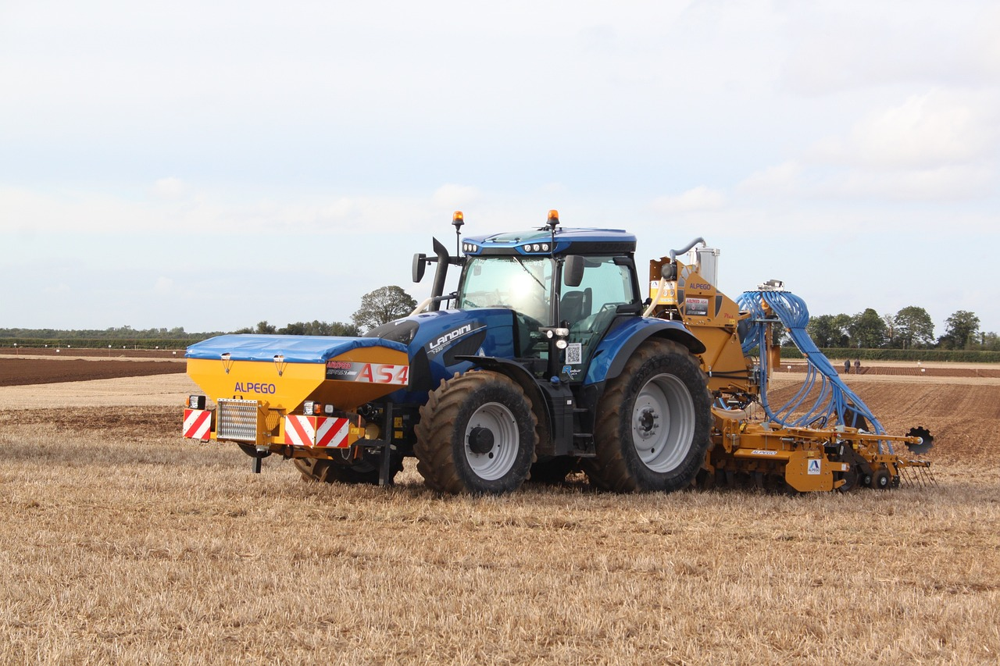

SOLUTECH
Olá, somos a Solutech! Temos como objetivo fornecer recursos produtivos, serviços, assistência técnica a diversas mulheres agricultoras
A agricultura sustentável visa o rodízio de culturas, utilização de adubos naturais e inseticidas biológicos. De maneira que essas práticas contribuam para um solo mais saudável, que é capaz de atender as necessidades de cultivo sem comprometer as gerações futuras.
Agricultura sustentável é aquela que respeita o meio ambiente, é justa do ponto de vista social e consegue ser economicamente viável. A agricultura para ser considerada sustentável deve garantir, às gerações futuras, a capacidade de suprir as necessidades de produção e qualidade de vida no planeta

A inteligência artificial nas empresas está mostrando resultados cada vez mais expressivos na produtividade, nas mais diversas áreas de atuação. A utilização de sistemas inteligentes potencializa os processos ao mesmo tempo que transforma as relações de trabalho.